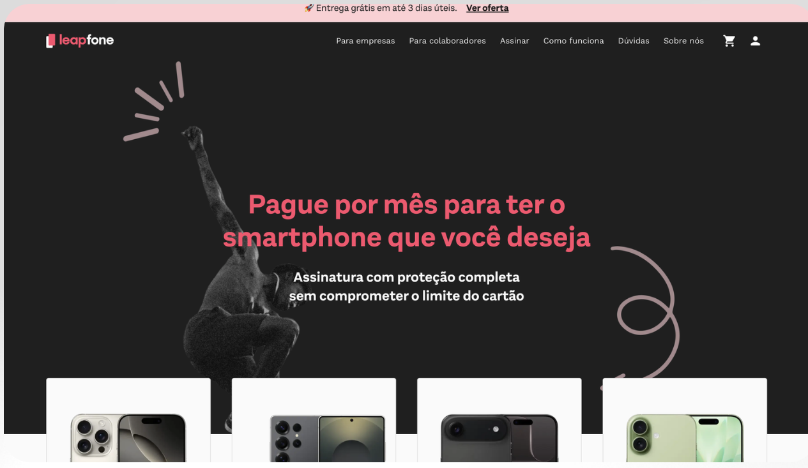
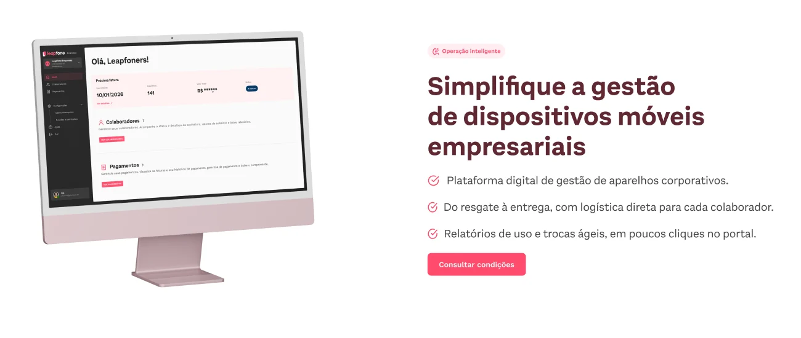
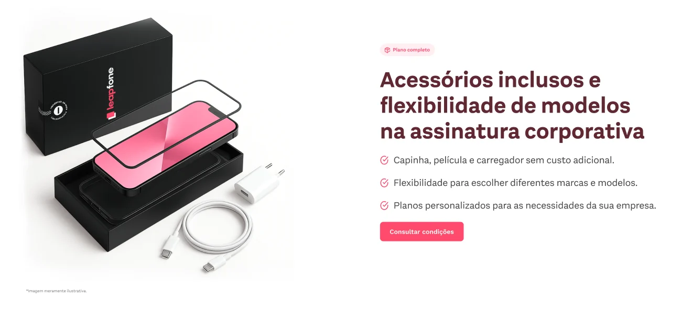
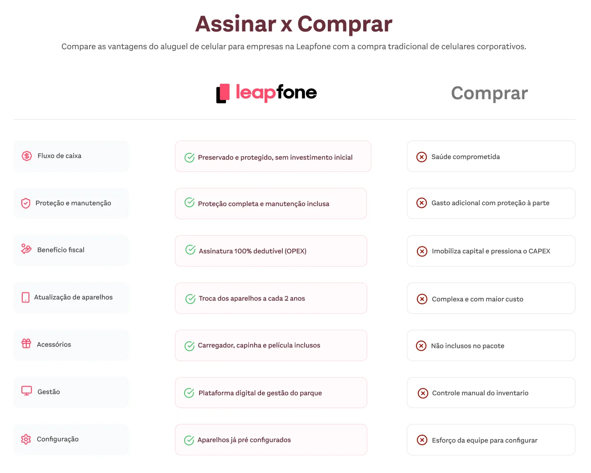
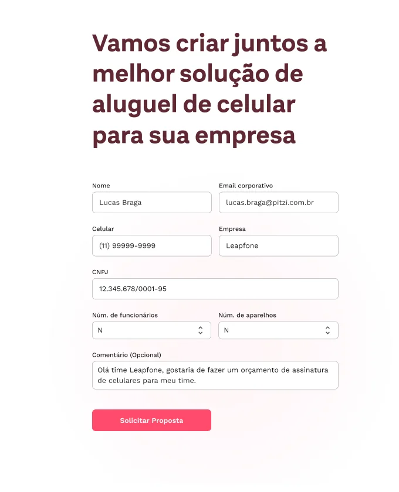
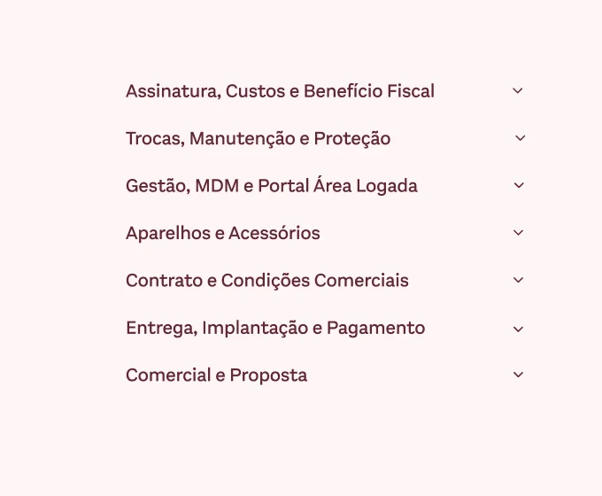
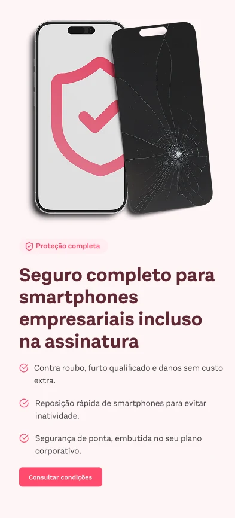
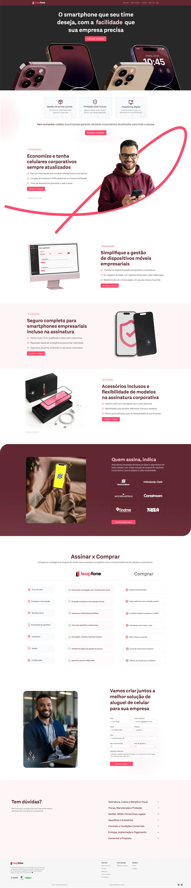

Project 05 · B2B website
Redesigning the Leapfone website for companies.
Leapfone rents smartphones to companies, with protection, replacement and a management portal included. I redesigned the B2B website so an IT or purchasing manager could understand the offer, compare it with buying and ask for a proposal.
The headline rotates between the three reasons companies gave for renting instead of buying: ease, technology and savings.
The challenge
The old website spoke to people renting a phone for themselves. A company looking for corporate phones, or an investor looking at the business, could not find itself in it.
The solution
A separate website for companies, organized around the arguments the sales team already used in meetings: cash flow, fleet management, protection and a complete kit.
My role
Research with data and sales, information architecture, copy, UI for desktop and mobile, and the handoff to development.
Before and after
From a consumer store to a website for companies.
Leapfone was preparing a funding round, and the website was one of the first things investors and B2B buyers would see. The existing page sold a monthly phone subscription to individuals, with product cards and a promotion bar. Nothing on it said who the company served or how the service worked for a business.

Data and sales
Behaviour data showed where people gave up. Sales showed why companies said yes.
I looked at traffic in GA4, heatmaps and session recordings in Clarity, and a Looker Studio dashboard I followed with the marketing and growth team. In parallel, I collected the messages the sales team used in cold emails and calls, grouped by the argument behind each one.
- The main button disappeared on mobile.On small screens, the call to action sat below decorative blocks, so many sessions ended before anyone reached it.
- The form was long and people left halfway.Recordings showed people starting the form and abandoning it before the last fields.
- The content did not sound like a B2B supplier.The page talked about the phone. Companies wanted to hear about cash, taxes, replacement and control of the fleet.
Iterations
The page went through three rounds before the final version.
Each round was reviewed with marketing and sales. The structure changed less than the argument: every version moved closer to what a company asks before signing.
- V1Lifestyle photo and a list of benefits
A generic hero, benefit cards, how it works, testimonials and a form. It looked like any SaaS page.
- V2Section variants
I explored heroes, carousels and title treatments one section at a time, to test them with the team.
- V3Models and a first comparison
Phone models came in, along with a first version of the rent versus buy comparison.
- FinalOne argument per section
A product hero, four sections built on the sales arguments, client logos, a full comparison table, a shorter form and a grouped FAQ.
Messaging
Each section answers one question a buyer brings to the meeting.
The sales team had dozens of messages. I grouped them into four arguments and gave each one a section with the same structure: a label, a claim, three concrete points and the same button. The repetition makes the page easy to scan.


Interface details
Four parts of the page, up close.
Three promises right after the hero
Before the long sections start, three cards summarize the service: management from delivery to support, protection included and one portal for the whole fleet.
Subscribe or buy, side by side
Sales used to make this comparison by hand in every meeting. On the page it became a table with seven rows, from cash flow to setup, with a check or a cross in each column so it reads at a glance.

A form built for a quote
It asks for what sales needs to prepare a proposal: company, CNPJ, number of employees and devices. The comment field comes prefilled, so nobody has to write from scratch.

Questions grouped by topic
Seven groups, from costs and taxes to delivery and payment, instead of one long list. They match the questions sales heard most.

Mobile
On mobile, each argument fits in one screen.
Image first, then the label, the claim, three points and the button. The call to action appears in every section, which fixed the main problem the data showed: on the old site, the button was out of reach on mobile.

Full page
The final page, from the hero to the footer.
The order follows the buying conversation: what it is, why it pays off, who already uses it, how it compares with buying and how to ask for a proposal.

SEO and copy
Written with the words companies type into Google.
With marketing, I mapped how companies search for this service, from the most direct terms to the ones IT managers use. Headlines, sections and meta tags were rewritten around them, and the headings got a proper H1 and H2 structure.
The copy also swapped product language for the words clients used with sales, such as cash flow, up-to-date devices and fast replacement.
Outcome
A website a company can read as a supplier.
The final site is more direct, with a clear hierarchy and a message that fits the stage Leapfone was in. The biggest lesson for me: once we agreed on who the site was talking to, most layout and copy decisions became simple.
This case shows the process and the decisions I led. The live Leapfone website may have changed since.
Want to see another project?
There are also banking cases with AIB and Banco do Brasil and a loyalty case with Gol in the portfolio.
View all projects